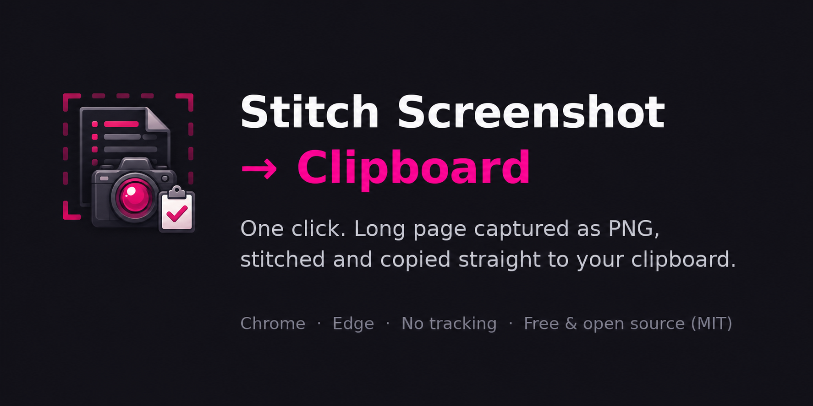

Stitch Screenshot → Clipboard
Full-page screenshots, stitched into one PNG, copied straight to your clipboard. Click the icon and the extension scrolls the page, captures every section, stitches them together, and puts the result on your clipboard — ready to paste anywhere. No editor, no file downloads, no account.

Get it on the Chrome Web Store →
Why this exists
Long pages don't fit on one screen. Capturing them normally means taking several screenshots, or installing a heavyweight capture suite. This extension collapses it to click → paste:
- Click the extension icon (or use the keyboard shortcut)
- The page is scrolled, captured section by section, and stitched into a single PNG
- Paste with Ctrl+V / Cmd+V into Slack, ChatGPT, Docs, Notion, email, tickets — anywhere that accepts images
Perfect for archiving articles, sharing full conversations, bug reports, and feeding whole pages to AI chats.
Features
- 🧵 Full-page capture — scrolls and stitches the entire page into one seamless image
- 📋 Straight to clipboard — never touches your disk; falls back to a download only if clipboard access is blocked
- ⚡ Lightweight — Manifest V3, no dependencies, no background snooping
- 🔒 Private by design — no accounts, no tracking, no analytics, no data collection; everything runs locally
- 🆓 Free & open source — MIT licensed
Permissions (all of them)
| Permission | Why |
|---|---|
activeTab | Capture the tab you're on, only when you invoke the extension |
scripting | Inject the temporary scrolling & stitching script into that tab on demand |
clipboardWrite | Put the finished PNG on your clipboard |
That's the full list — no host permissions, no background access to your browsing.
Install from source (developer mode)
- Clone the repository
- Open
chrome://extensionsand enable Developer mode - Click Load unpacked and select the
extensionfolder
FAQ
Why doesn't it work on some pages?
Chrome blocks screenshots on internal pages (chrome://, chrome-extension://, the Web Store) for security. Regular https:// pages all work.
The stitched image has gaps or repeated sections.
Pages with sticky headers, infinite scroll, or heavy animations can confuse stitching. Let the page fully load and try again — see the support page for more tips.
Where are my screenshots stored?
Nowhere. The PNG goes to your clipboard and exists only there.
Support
Privacy & license
No data collection — see the Privacy Policy. Code is MIT licensed.